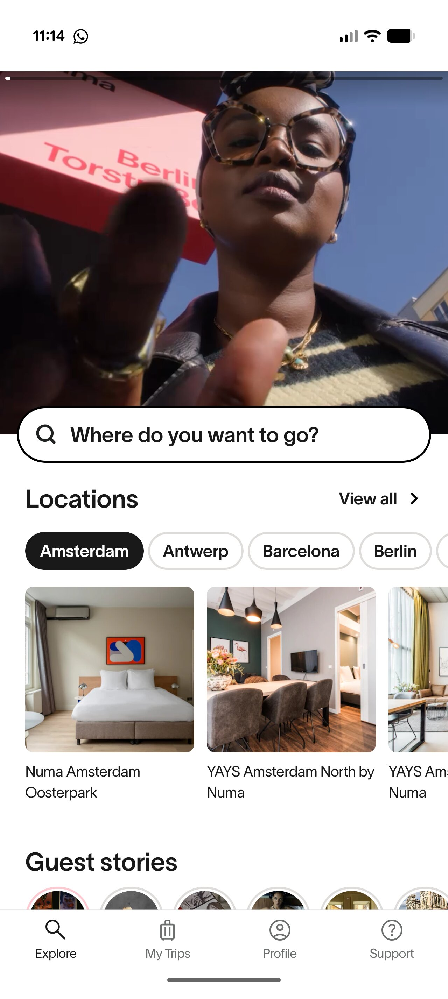

Lumi Spotlight
Pre-booking
Barcelona booked
close

Ask Lumi
Good evening, Sarah.
How can I help?
How can I help you today?
explore
Where should I stay?
map
Help me plan my trip
info
Tell me about Numa
door_front
Doors
wifi
Wi-Fi
schedule
Late checkout
logout
Checkout
The AC in my room isn't working.
I'll get someone to take a look.
Reported to maintenance.
All set. Someone will be with you shortly.
Today
close
Ask Lumi
Good evening, Sarah.
How can I help?
Welcome to Barcelona, Sarah.
How can I help?
explore
Where should I stay?
map
Help me plan my trip
info
Tell me about Numa
door_front
Doors
wifi
Wi-Fi
schedule
Late check-out
place
Nearby
The AC in my room isn't working.
I'll get someone to take a look.
Reported to maintenance.
All set. Someone will be with you shortly.
Today
Today
Idle
Thinking
Success
Idle
Thinking
Success